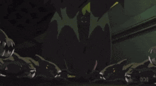
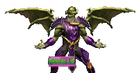

O Aniquilador foi, em vários momentos, o governante da Zona Negativa, controlando seus habitantes por meio de seu poderoso Bastão de Controle Cósmico. Ele encontrou o Quarteto Fantástico pela primeira vez depois que Reed Richards descobriu como viajar da Terra para a Zona Negativa. Ao longo dos anos, ele entrou em conflito com o Quarteto Fantástico em diversas ocasiões, muitas vezes com o grupo frustrando seus planos de invadir a Terra.

